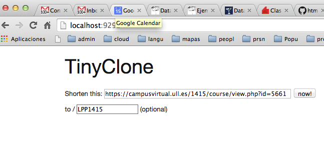

Siguiente: Práctica: Estadísticas de Visitas Subir: DataMapper y Sinatra Anterior: Asociaciones Through Índice General Índice de Materias
La entrada sería similar a esta:

require 'omniauth-oauth2' require 'omniauth-google-oauth2' require 'omniauth-facebook'
auth.rb
session para guardar al información sobre el usuario
cuando se nos de en la ruta de callback
para utilizarla posteriormente:
get '/auth/:name/callback' do
session[:auth] = @auth = request.env['omniauth.auth']
session[:name] = @auth['info'].name
session[:image] = @auth['info'].image
session[:url] = @auth['info'].urls.values[0]
session[:email] = @auth['info'].email
flash[:notice] =
%Q{<div class="chuchu">Autenticado como #{@a...uth['info'].name}.</div>}
# Añadir a la base de datos directamente, siempre y cuando no exista
if !User.first(:username => session[:email])
u = User.create(:username => session[:email])
u.save
end
redirect '/'
end
get '/auth/failure' do
flash[:notice] =·
%Q{<div class="error-auth">Error: #{params[:message]}.</div>}
redirect '/'
end